Research in BMFL
Microfluidics enable applications of biophysical and biochemical stimuli to utilize engineering principles to better elucidate the nature of biological response in question.
Microfluidic platforms for biological application
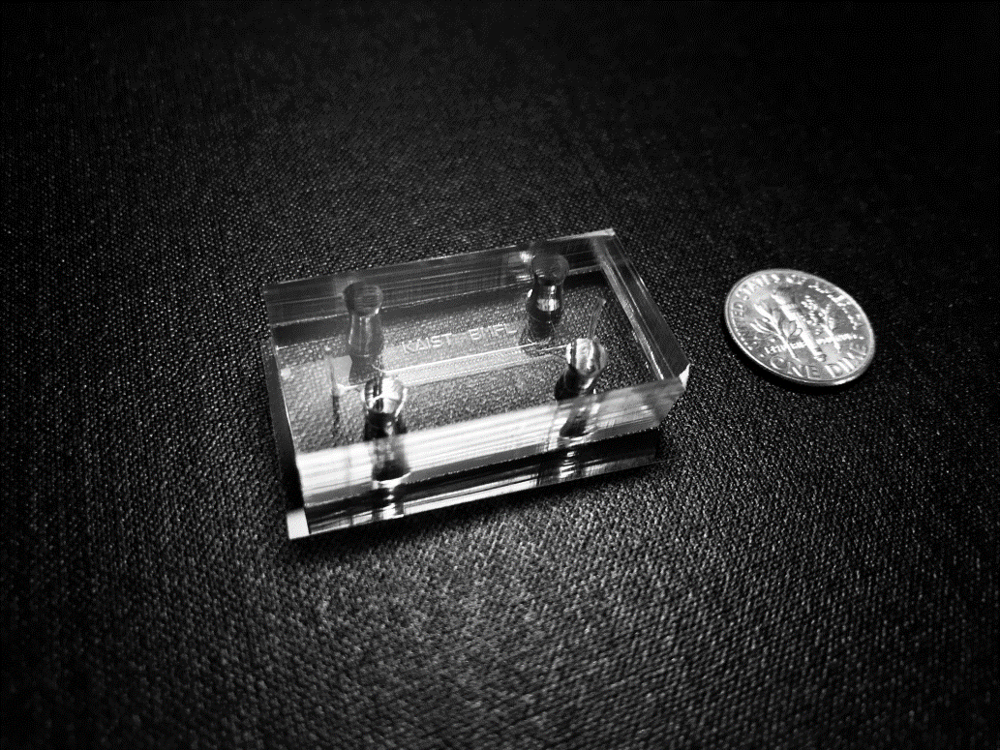
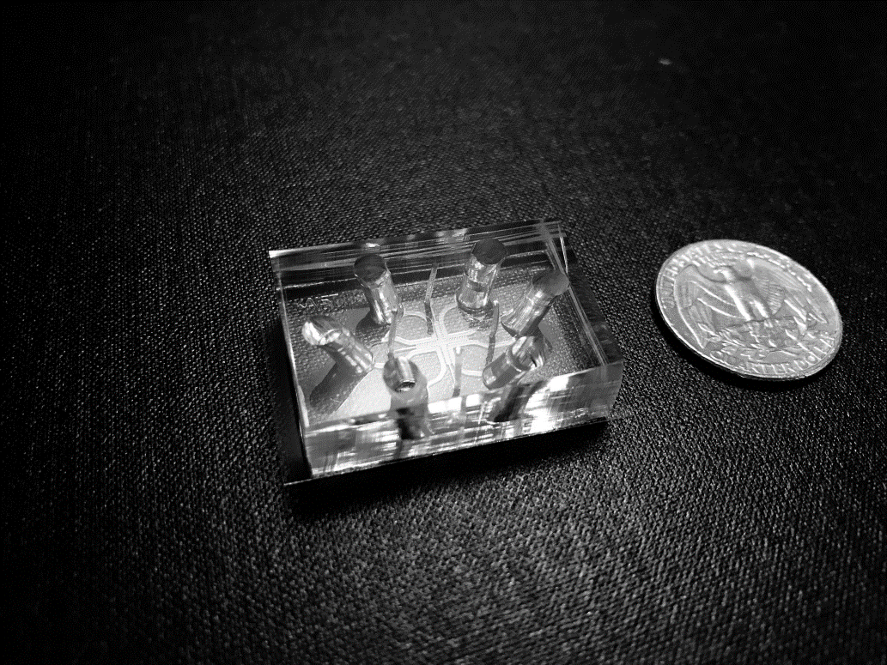

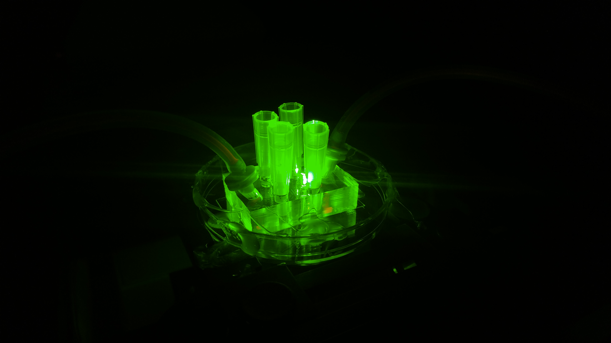
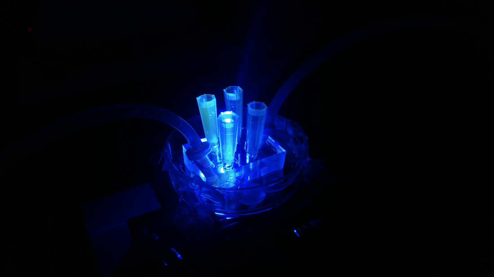
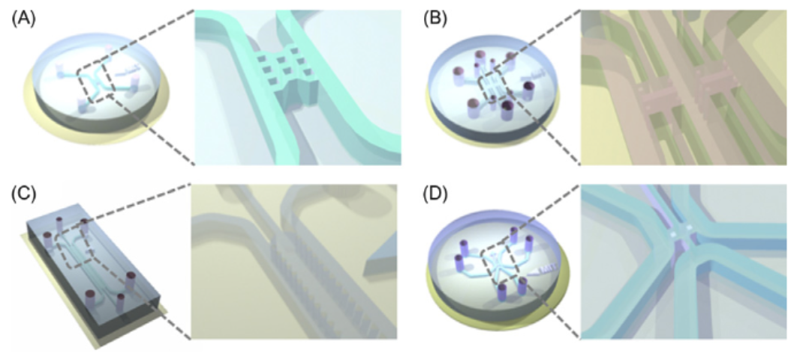
Microfluidic systems have major advantages in studying biological phenomenon since they can mimic aspects of the 3D in vivo situation in a controlled environment while simultaneously providing in situ imaging capabilities for visualization and enabling cell-cell and cell-matrix interaction quantifications. Despite supporting experimental evidence showing the importance of complex microenvironment, none of the previously reported in vitro systems has reproduced the specific cross-talk among several cell types in a complex pathophysiological microenvironment such as cancer or atherosclerosis model. Moreover, microfluidics allow parametric study of multiple factors in controlled and repeatable conditions. In Biomicrofluidics Lab, we will develop a microfluidic assay and use it to study different disease models including cancer metastasis and evolution of atherosclerosis. The platform will allow organ-specific mimetic to better clarify the mutual interactions between different cell populations in a well-defined microenvironment, in order to develop highly focused and more effective therapies.
Publications
"Microfluidic assay for simultaneous culture of multiple cell types on surfaces or within hydrogels."
Shin et al., Nature Protocols 2012
"Chapter 16. Microfluidic platforms for evaluating angiogenesis and vasculogenesis"
Jeon et al., Microfluidic Cell Culture Systems 2012
Shin et al., Nature Protocols 2012
"Chapter 16. Microfluidic platforms for evaluating angiogenesis and vasculogenesis"
Jeon et al., Microfluidic Cell Culture Systems 2012
Vessel Engineering
Vasculogenesis, a process of vessel formation, on the microfluidic chips is one of the major research interests in BMFL. The 3D blood vessel network can be formed by culturing endothelial cells (e.g. HUVECs) on the microfluidic chips. The microfluidic chips allow analysis of the networks' biological and mechanical structures in detail. The 3D microvessel networks mimic in vivo microenvironments better than the classic 2D transwell cultured endothelial cells do. In addition, co-culturing endothelial cells with other cells (e.g. cancer cells) allows one to observe diverse biological phenomenon (e.g. metastasis).
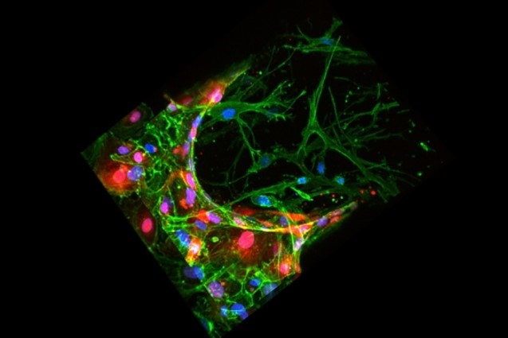
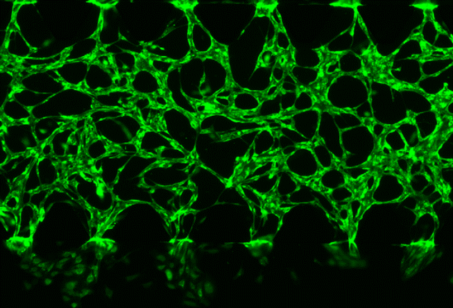
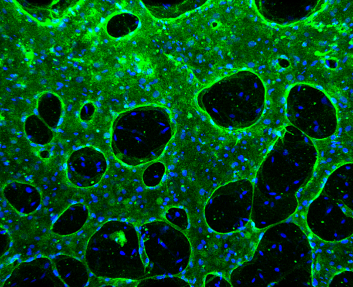
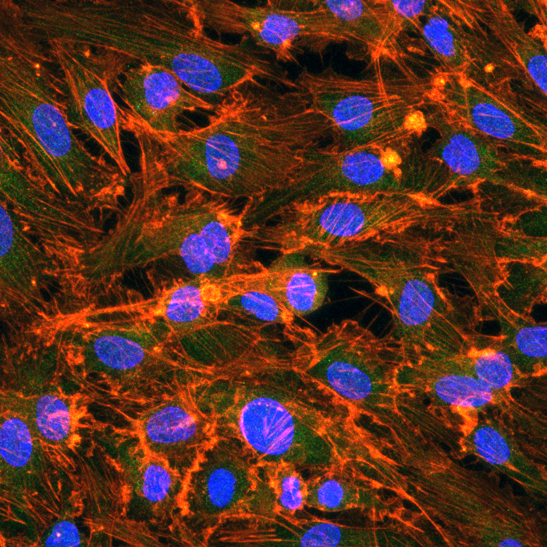
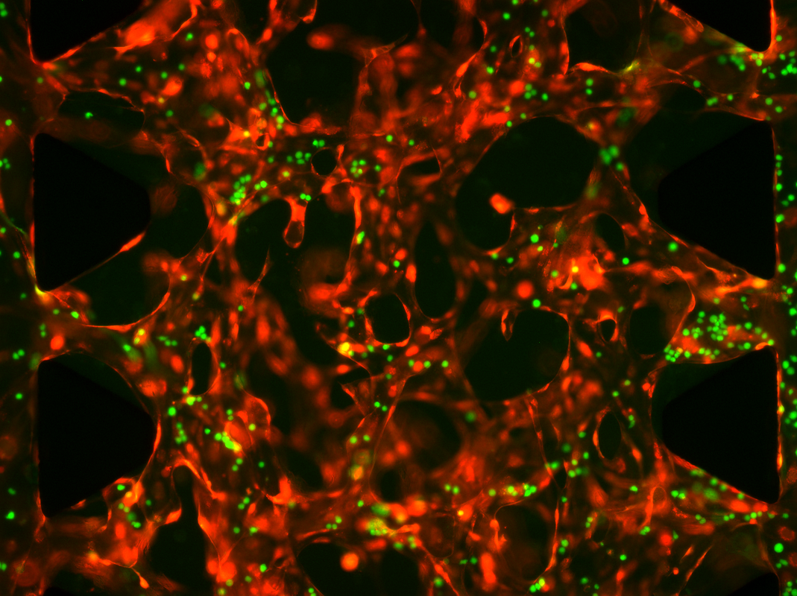
Journal Publications
"Vasculature-On-A-Chip for In Vitro Disease Models."
Kim et al., Bioengineering 2017
"Generation of 3D functional microvascular networks with human mesenchymal stem cells in microfluidic systems."
Jeon et al., Integrative Biology 2014
Kim et al., Bioengineering 2017
"Generation of 3D functional microvascular networks with human mesenchymal stem cells in microfluidic systems."
Jeon et al., Integrative Biology 2014
Tumor Microenvironment
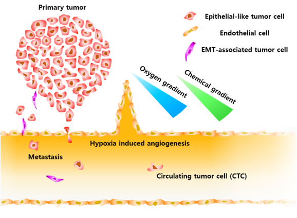
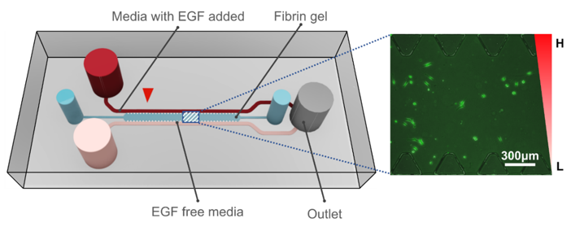
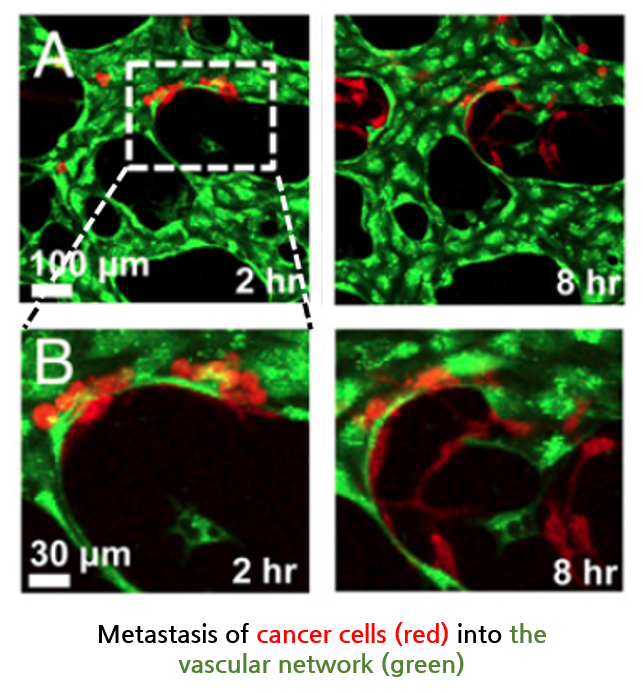
Tumor microenvironment is a key to understand tumor behaviors. In vivo tumor microenvironment, there exists a complex structure including blood vessels and gradients of chemical and oxygen. Using the microfluidic chips, we can co-culture different cells and induce oxygen or chemical gradients. By mimicking the tumor microenvironment on chip, cancer progression such as metastasis can be observed and analyzed. It is important to study metastasis since metastasis is recognized as the cause of 90% of deaths by solid tumors. Acquiring a deeper understanding of cancer invasion and therapeutic strategies can lead to a vital contribution in reducing metastasis through novel treatment methods which target the invasion pathways. The proposed research will provide a well-controlled platform that mimics organ-specific tumor microenvironment as well as providing real-time visualization of cancer cell migration.
Journal Publications
"Chemotaxis Model for Breast Cancer Cells Based on Signal/Noise Ratio."
Lim et al., Biophysical Journal 2018
"Human 3D vascularized organotypic microfluidic assays to study breast cancer cell extravasation."
Jeon et al., PNAS 2015
"In Vitro Model of Tumor Cell Extravasation."
Jeon et al., PLOS ONE, 2013
Lim et al., Biophysical Journal 2018
"Human 3D vascularized organotypic microfluidic assays to study breast cancer cell extravasation."
Jeon et al., PNAS 2015
"In Vitro Model of Tumor Cell Extravasation."
Jeon et al., PLOS ONE, 2013
Muscle Tissue Engineering
Muscles are constantly exposed to mechanical stress caused by elongation in our body. In addition, tretching muscles is used to enhance healing of muscle injuries. Using the microfluidic chips and our homemade stretcher, in vitro elongation of muscle cells can be easily applied and changes can be observed. In BMFL, we are aiming to observe essential biomechanical mechanisms related to muscle stretching.
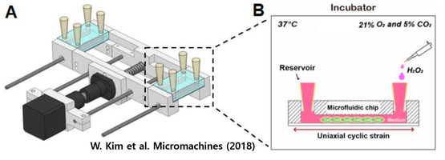
Journal Publications
"Development of Microfluidic Stretch System for Studying Recovery of Damaged Skeletal Muscle Cells."
Kim et al., Micromachines 2018
Kim et al., Micromachines 2018
Testing Antimicrobial Effect Against Bacteria
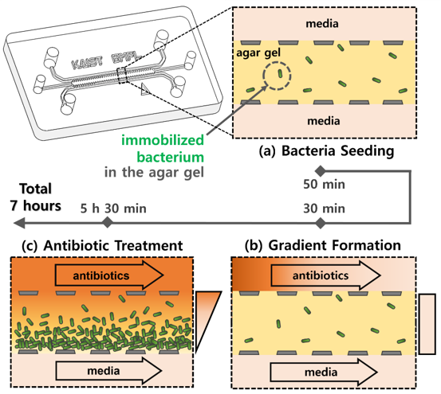
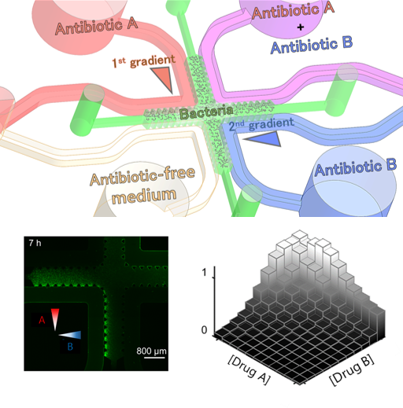
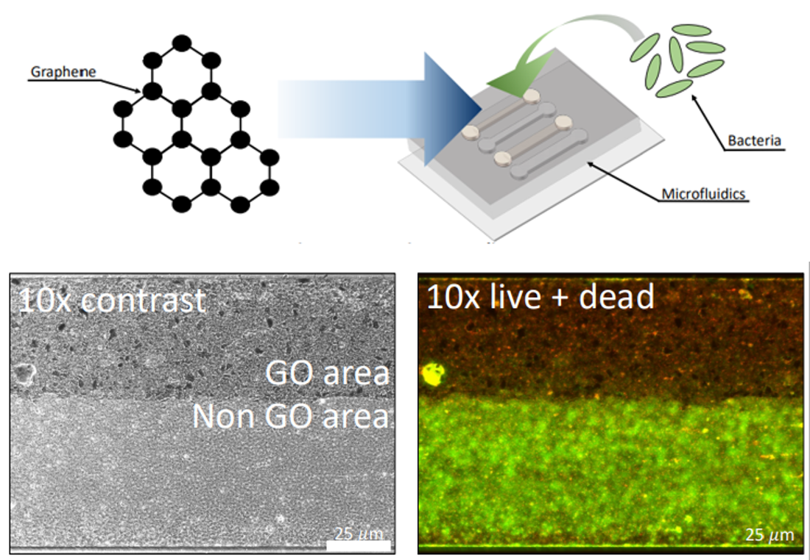
In BMFL, we use the microfluidic systems to culture bacteria for studying their responses to drugs and other external stimuli (e.g. graphene and reactive oxygen species). One of our interested fields is the antibiotic susceptibility testing (AST). As pathogenic bacteria started to gain resistance against existing antibacterial drugs, the information about bacterial susceptibility to drugs started to gain its possibilities for future antibacterial strategies. The accurate and efficient AST platforms that allow dilutions and combinations of drugs were developed in our lab using the multiple channels, showing the antimicrobial effects of antibiotics quantitive quantitively. In addition, studying the antimicrobial effects of graphene on bacteria within the microfluidic chips has great possibilities of potential applications.
Journal Publications
"On-chip phenotypic investigation of combinatory antibiotic effects by generating orthogonal concentration gradients."
Kim et al., Lab on a chip 2019
"Recent Developments of Chip-based Phenotypic Antibiotic Susceptibility Testing"
Kim et al., Biochip journal 2019
"Microfluidic-based observation of local bacterial density under antimicrobial concentration gradient for rapid antibiotic susceptibility testing"
Kim et al., Biomicrofluidics 2018
"Visual Estimation of Bacterial Growth Level in Microfluidic Culture Systems"
Kim et al., Sensors 2018
Kim et al., Lab on a chip 2019
"Recent Developments of Chip-based Phenotypic Antibiotic Susceptibility Testing"
Kim et al., Biochip journal 2019
"Microfluidic-based observation of local bacterial density under antimicrobial concentration gradient for rapid antibiotic susceptibility testing"
Kim et al., Biomicrofluidics 2018
"Visual Estimation of Bacterial Growth Level in Microfluidic Culture Systems"
Kim et al., Sensors 2018